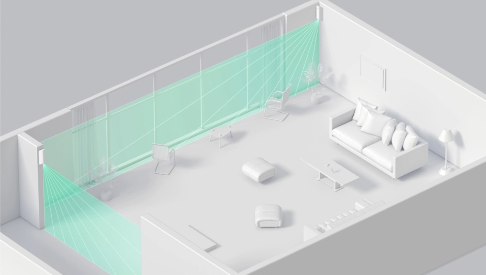
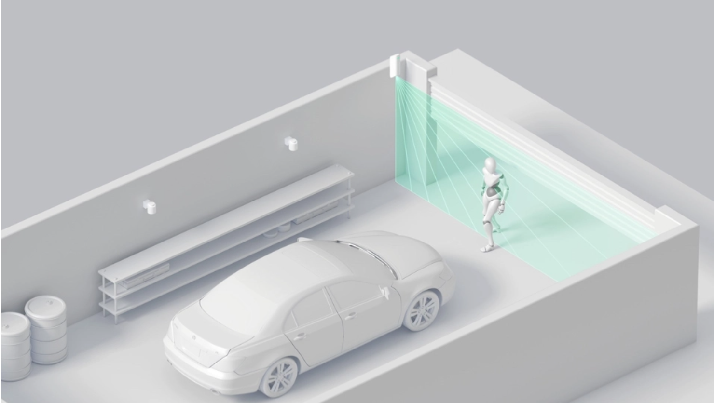
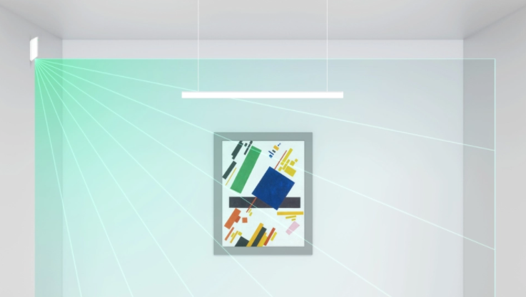
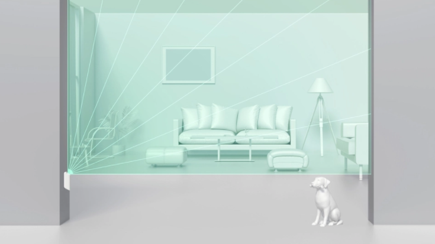

Den indendørs bevægelsesdetektor, med smal stråle, beskytter vinduer, døre og værdigenstande og fungerer som perimeterbeskyttelse.
Proprietær optisk teknologi
For at oprette MotionProtect Curtain har vi udviklet et optisk system med to infrarøde sensorer og et mangesidet spejl. Dette system giver detektoren mulighed for at modtage dobbelt så meget information om, hvad der foregår i det beskyttede område og straks reagere på menneskelig tilstedeværelse.
Uanset om indtrængeren kører eller sniger/lister, er gardin detektoren altid på vagt. Så snart de kommer ind i synsfeltet, analyserer detektoren signaler fra begge PIR-sensorer og sender straks en alarm.
Hjemme
Med MotionProtect Curtain-detektorer kan du sikre dit hus omkreds og frit bevæge dig indendørs. Hvis en fremmed bryder ind, vil systemet alarmere og ringe til sikkerhedsselskabet.

I en garage
Indbrudstyv kommer ikke op gennem garageporten uden at blive opdaget når MotionProtect Curtain er i aktion. Gardindetektoren fortsætter med at fungere, selvom temperaturen falder til -10 ° C.

På et museum
Besøgende kan slentre udstillingerne, som de vil. Men hvis de krydser linjen og strækker sig mod et kunstværk, vil der blive alarm.

I en kæledyrsvenlig lejlighed
Når det er installeret korrekt, holder MotionProtect Curtain din private ejendom sikker og ignorerer kæledyrene, selvom de er Saint Bernards.

MotionProtect Curtain opretter forbindelse til sikkerhedssystemet via Ajax-appen: scan QR-koden, tilføj detektoren til rummet, og fortsæt med installationen.